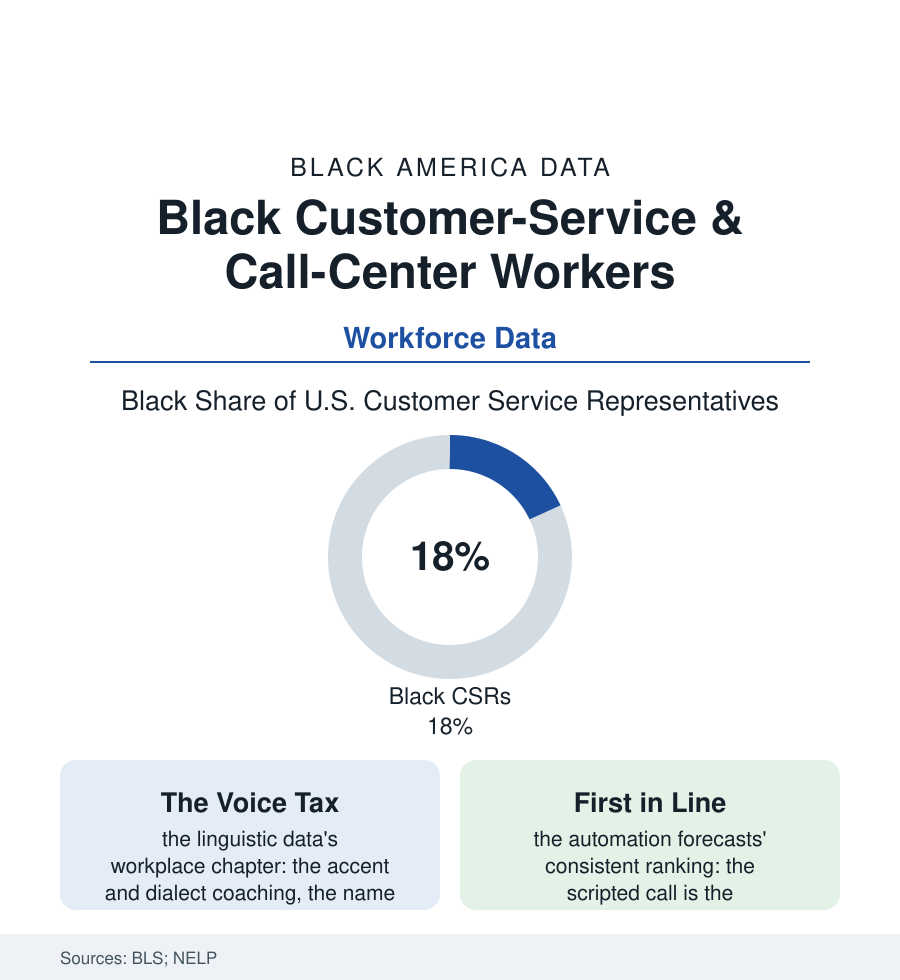

Black Employment
The Headset Economy: Black Customer-Service Workers
Nearly three million Americans answer the phones, and Black workers are close to a fifth of them — in the occupation now first in line for the algorithm. The headset file.

When America has a problem — the bill, the flight, the password, the claim — it calls, and a Black worker answers a striking share of the time. Customer service representatives number near three million in the federal count, roughly eighteen percent of them Black, concentrated in the call centers that whole regions recruited as their factory replacement. It is the service economy's quintessential job, and its first in the automation queue. This article reads the headset file.
The Factory That Answers
The call center's geography is the deindustrialization map redrawn in headsets: the centers sited where the plants closed — the Ohio and Carolina towns, the inner-city campuses the cities subsidized as jobs programs in commercial dress — the economic-development file's tax abatements buying seats whose wages the BLS tables set near the service median and whose conditions the occupational literature itemizes without sentimentality (the monitored minute and the scripted greeting, the handle-time clock, the bathroom break as a scheduled event, the emotional labor of absorbing the public's rage at a corporation whose name the worker wears and whose decisions she does not make — the burnout and turnover curves, fifty percent a year and worse at the industry's churn end, the vital-signs literature of a job that is sitting still while being yelled at). The workforce's demographics layer its own files onto the headset: the occupation's feminization, the mothers of the childcare file working the shift differentials, the voice tax the sociolinguists measure (the dialect and accent screened at hiring in the audit data — the name on the phone badge Anglicized by policy at some centers in the documented cases, the code-switch performed eight hours a day as an unlisted job duty), and the tiering within (the retention-desk and technical-support ladders paying for the judgment the script cannot hold, the bilingual premium, the work-from-home migration of the pandemic years relocating the center into the spare bedroom — the commute saved, the isolation and the always-on surveillance software the telework file's entries, the rural broadband file deciding which hometowns the home-based center can hire from). The public shelf runs its own vast centers in parallel — the Social Security and veterans' phone lines, the 311 and benefits desks of the cities — where the headset wears the public-sector bargain instead (the union card, the pension, the same public on harder days), and the comparison between the two tiers' identical work is the file's standing exhibit on what the bargain is worth.
The Algorithm in the Next Cubicle
The occupation's forward data are the automation literature's clearest case study: the forecast models ranking customer service among the most exposed large occupations on earth (the scripted, text-mediated, endlessly recorded work being precisely the training data's richest seam), the deployment already legible in the centers' own mix (the chat window's first answers written by the model, the call that reaches a human having survived the bot's gauntlet — the human remnant's work made harder by subtraction, every easy call eaten by the machine, the headset left holding the fury, the fraud, and the grief). The file's task is to state what the displacement would mean where it would land: on a workforce eighteen percent Black and majority women, in the towns that recruited the centers as their salvation and the households whose mortgage math the shift differential completes. The transition assets are the file's closing entries and they are real — the occupation's veterans carrying the economy's largest stock of practiced de-escalation, product knowledge, and systems fluency, the skills the complex-claims, patient-navigation, and client-success tiers pay premiums for in the adjacent data — but the bridge, as in every automation file in this atlas, is not self-building: it is a training budget, a credential, and a hiring decision, and the centers' own history (recruited with public money for public purposes) is the standing argument that the bridge is owed rather than charitable.
Reading the Customer-Service Data
Three million voices is a population, and its demographics say whose voice America hears when it calls for help. The occupation's squeeze — the clock, the script, and now the model — is the service economy's central drama playing in its largest cast. The BLS counts the headsets. What happens to the towns and households behind them is the number the forecasters owe next.
More in Black Employment
The Black Unemployment Rate: The Two-to-One Pattern
Black unemployment runs at roughly twice the White rate — 5.5 percent against 3.3 percent in annual averages — a ratio stable across five decades of federal data. How it is measured and why it persists.
Black Median Weekly Earnings: The 80-Cent Ratio
Black full-time workers earn a median of about $900 a week — roughly 80 cents for every dollar White workers earn. The BLS earnings data by group, gender, and occupation.
Black Labor Force Participation: Working at National Rates
Black labor force participation runs at roughly the national rate — and Black women participate at higher rates than White women. The BLS participation data.
Source: U.S. Bureau of Labor Statistics occupational data; U.S. Census Bureau; National Employment Law Project service-sector research; Contact Center industry data.